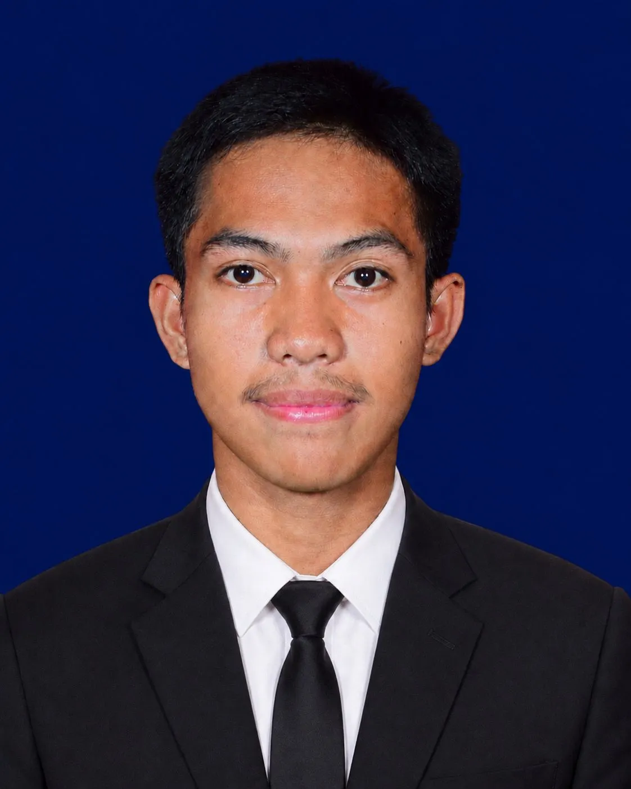

Kenalan lebih dekat denganku — siapa aku dan apa yang aku suka.

Halo! Nama saya Erwinsyah Ramadhan. Seorang pelajar SMA yang aktif, komunikatif dan memiliki semangat untuk terus mengeksplorasi dunia teknologi, industri, desain, dan organisasi. Saya percaya bahwa masa remaja adalah waktu terbaik untuk belajar hal baru sebanyak mungkin.
Ketertarikan saya pada bidang teknologi — terutama di bidang teknologi pangan — dimulai ketika saya mulai mendalami pelajaran di jurusan yang saya minati, dan saya juga terus mendalami minat saya di bidang desain.
Setiap langkah adalah pelajaran berharga yang membentuk siapa saya sekarang.
Aktif di bulu tangkis sebagai anggota aktif dan di band sebagai personil anggota aktif. Kemudian pada 2024 diangkat sebagai ketua bulu tangkis.
Membuat minyak berbahan kelapa, kelapa jelly, dan kompos dari serabut kelapa.
Mengikuti lomba bulu tangkis O2SN tingkat Kabupaten dan masuk 10 besar.
Membuat gaun dan kerajinan dari bahan sampah plastik.
Membuat video cerita singkat dan berpartisipasi dalam event nasional.
Membuat mural di tembok sekolah dengan tema batik sekaligus penilaian blok pramuka.
Mengikuti pertunjukan drama seangkatan sebagai pemeran setan bergenre horor, berdurasi 2 jam.
Berpartisipasi dalam pergelaran festival seni musik seangkatan sebagai personil gitaris.
Menanam pohon disekolah untuk kegiatan penghijauan.
Menanam rempah-rempah, memanen, dan mengolahnya untuk dijual di stand bazar sekolah.
Membuat Karya Tulis Ilmiah (KTI) sebagai syarat kelulusan.
Pengalaman organisasi yang membentuk karakter dan kemampuan kepemimpinan.
Bukan siapa yang paling kuat, tapi siapa yang paling pantang menyerah di lapangan.
2023 – 2026Musik bukan hanya soal suara, melainkan nada yang disertai perasaan.
2024 – 2025Anggota aktif Pramuka Penegak. Mengembangkan jiwa disiplin, kerja sama, dan kepemimpinan.
2023 – 2026